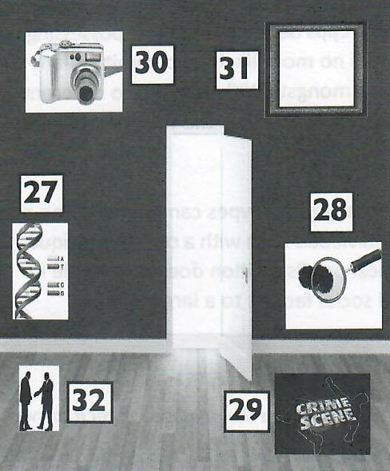

Part 1
READING PASSAGE 1
Read the text on the next page and answer Questions 1-13.

Prison: The Solution or the Problem?
In the Netherlands and parts of the USA such as Johnson County, a move towards rehabilitation of offenders and decreasing crime has seen a reduction in incarceration rates. Bucking this trend, the UK's prison population has increased by an average rate of 3.6% per year since 1993. As the situation currently stands, England's and Wales' incarceration rate is 148 per 100,000 compared to 98 in France, 82 in the Netherlands and 79 in Germany. Without a shadow of a doubt, out of all European countries, the UK has adopted the most hardline approach to offenders.
The trend towards imposing prison sentences on offenders in the UK is made to seem all the more harsh since the Dutch Justice Ministry is actively in the process of systematically closing down prisons. In the period between 2010-2015, 28 prisons were closed in total. If anything, the Dutch reform of the prison system has been accelerating at a phenomenal pace, with 19 of the prisons being shut down in 2014 alone.
As would be expected, closures of prisons in the Netherlands have led to a drop in the numbers of incarcerated offenders. This is also largely due to the fact that those convicted are choosing electronic tagging instead of incarceration. However, there is more to these statistics than meets the eye. Defying all expectations of the pro-incarceration lobbyists, crime rates in the Netherlands are also actually decreasing in direct proportion to the closure of prisons.
With such statistics laid bare for all to see, many are now beginning to question the validity of incarceration as a method of reforming offenders. All the more so since the average prison place costs the taxpayer £37,648 per year - a hefty sum for a service that fails to deliver, especially since there are vastly cheaper and more effective methods to deal with offenders. Allowing offenders to be tagged electronically rather than be incarcerated would save around £35 million per year for every 1000 convicted offenders. Serving a probation or community service order would also be 12 times less costly than the average prison placement for an offender.
More tellingly, a decreased incidence of relapse into criminal behaviour when offenders receive a community sentence, rather than a custodial one, has been revealed in re-offending statistics issued by the UK Ministry of Justice. There is definitely an argument that serving a prison term tends to create rather than alleviate the problem of crime. As a Conservative white paper concluded in 1990, 'We know that prison is an expensive way of making bad people worse.' Interestingly, the report also argued that there should be a range of community-based sentences which would be cheaper and more effective alternatives to prison.
Quite apart from the cost and relative ineffectiveness of incarceration is the short-sightedness of imposing a custodial sentence in the first place. A punitive system of incarceration presupposes that the prisoner needs to be punished for bad behaviour. Since the prisoner is considered answerable for their behaviour, it is believed that they are also completely responsible for their actions. Such an approach overlooks social and economic factors that can play an integral role in the incidence of crime. Such an oversight only serves to perpetuate crime and punish offenders who need help rather than a penal sentence.
It would do no harm for the UK to look to the Netherlands for an example in reducing crime through addressing social problems as a key to reducing incarceration. In the Netherlands, the focus is on deterring crime by investing in social services rather than seeking purely to punish the offender. In addition, those who do offend are helped with rehabilitation programmes.
Overlooking the social circumstances of the offender can also be detrimental to children's welfare, especially if a mother is convicted and given a custodial sentence. Often childcare arrangements are not in place when custodial sentences are handed down to mothers caring for children. In fact, research suggests that more than half of the women who go to court are not expecting a custodial sentence, leading to provisions made for the children being haphazard at best. The number of children who fall foul of the custodial system in this way totals a staggering 17,000 per year. Worse still, figures show that adult children of imprisoned mothers are more likely to be convicted of a crime than adult children of imprisoned fathers. Viewing the offender and their crime in isolation and disregarding all other social and environmental factors is therefore mistaken, if not downright morally reprehensible.
All evidence would seem to point to a much needed shake-up of the English penal system. As things stand, there are too many losers and no identifiable winners. It was Dostoevsky who said: 'The degree of civilisation in a society is revealed by entering its prisons.' Maybe we would do better to go one step further and amend his quotation to 'The degree of civilisation in a society is revealed by not having prisons and instead by addressing social issues in society itself.'
Part 2
READING PASSAGE 2
Read the text below and answer Questions 14-26.

Physiology and Criminality
Prior to the 19th century, criminality was considered more of a moral or philosophical issue. Only with the advent of Italian anthropologist Cesare Lombroso did the subject of criminality take a more scientific turn. With the publication of his theories of criminal behaviour, Lombroso advanced the idea that criminal behaviour was attributable to physiological disposition rather than to any existential reasons.
In his 'atavistic form' theory published in 1876, Lombroso claimed that criminality was heritable. He proposed that a distinct biological class of people were prone to criminality. Such people, he claimed, exhibited 'atavistic' or primitive features and were 'throwbacks', bearing physical resemblances to Man's predecessors, the Neanderthals. Characterised by a strong, well-defined jaw and heavy brow, they certainly had little to recommend them in the beauty stakes. With such features, coupled with a tendency towards criminal behaviour, Lombroso's atavistic type was certainly not cut out for social success. Just for good measure, Lombroso also included other distinguishing features to identify criminals, such as bloodshot eyes and curly hair for murderers and thick lips and protruding ears for sex offenders. It has to be wondered, given the unusual appearance with which they were credited, how such individuals would have got close enough to their victims to begin with and, more to the point, how any such criminals hoped to get away with their crime, seeing as they were so readily identifiable.
In hindsight, Lombroso's hypothesis seems ludicrous and deeply flawed. One major failing in Lombroso's theory of an atavistic type is that no proper controls were used in studies designed to support his hypo-thesis. All individuals were confined to a criminal population, no comparison being made at the time with non-criminal control groups. Secondly, the concept of what constitutes a crime is in itself a social construct and can vary cross-culturally and over time. Therefore, the argument that criminal behaviour is inherited is hard to sustain. Finally, in the light of modern genetic research, complex behaviours are not considered to be controlled by single genes, thereby completely ruling out any possibility of inherited criminality.
Surprisingly, given his strong conviction of a biological disposition towards criminality, Lombroso later modified his views to admit environmental influences in determining criminal behaviour. Such views now form the basis of contemporary theories of criminality. In recognition of this fact, contemporary criminologists have bestowed on Lombroso the honorary title 'the father of criminology'. Furthermore, despite scientific failings in his experimental approach, Lombroso is to be credited with shifting the study of criminal behaviour from a moral basis to an empirical one, thereby placing the study of criminology on a more scientific footing.
The argument for a biological basis to criminality resurfaced, however, nearly a century later with Sheldon's theory of somatotypes. In 1949, Sheldon advanced the theory that individuals fell within three broad physical types: the ectomorph, mesomorph and endomorph. The ectomorph was essentially thin, the mesomorph muscular and athletic, whilst the endomorph type was said to be fat and rather lethargic. Each physical type, Sheldon claimed, was associated with a distinct personality and temperament. Ectomorphs were characterised by a solitary and restrained nature, whilst mesomorphs were said to be adventurous and endomorphs relaxed and pleasure-loving. Unfortunately for the mesomorphs, Sheldon also claimed that those corresponding to this physical type had criminal tendencies. By linking inherited physical types with personality, Sheldon thereby was hypothesising a hereditary aspect to criminal behaviour. Sheldon's studies of mesomorphic college students did to some extent confirm his theory as did a later study conducted by Putwain and Sammons as recently as 2002. In partial support of Sheldon's theory, an increased level of testosterone associated with a mesomorphic build could explain such a biological disposition towards criminality associated with a particular body type. However, social prejudices and self-fulfilling prophecies could also be at play in the above average correlation between mesomorphic types and criminal behaviour in society.
Following on from Sheldon's hypothesis, a further argument for a biological disposition to criminality was proposed in the 1960s. This time, hereditary tendencies were linked to genetic defect or chromosomal abnormality. Variations of the normal 'XY' genetic component or genotype of males were hypothesised to determine criminal behaviour from homicide to violent crime. The theory was based on the unproven assumption that possession of an extra 'X' chromosome 'feminises' a man and so conversely having an extra male 'Y' chromosome should make a man more masculine and aggressive. However, this somewhat weak hypothesis was severely undermined by the study of Epps in 1995. Epps demonstrated that possessing an extra 'Y' chromosome, as in the 'XYY' genotype, made an individual no more likely to commit violent crime than anyone else. The further finding that testosterone levels amongst 'XYY' men are no different from 'XY' men and that the former are no more aggressive than the latter sounded the final death knell for the hypothesis of a criminal type determined by genotype alone.
At least those who place trust in rehabilitation programmes to reform criminal types can now breathe a sigh of relief. It would seem that the rather pessimistic prognosis for individuals born with a certain physique or genotype no longer holds credence in scientific circles. If biological predisposition does play a role in criminality, it seems to be at least tempered by environmental and social factors to a large extent.
Part 3
READING PASSAGE 3
Read, the text on the next page and answer Questions 27-40.

Jack the Ripper: A Bungled Investigation?
Few murder enquiries have stirred the public imagination to such an extent as those relating to Jack the Ripper. The report of murders worthy of a depraved savage simultaneously appalled and enthralled Victorian society as the 19th century came to a close. The unleashing of a serial killer onto the London scene caught police unprepared as did the unprecedented brutality of the killings which earned their perpetrator the nickname 'Jack the Ripper'. So, given the heightened public interest and the existence of a police force more competent than ever before since the formation of the Metropolitan Police in 1829, it has to be asked: why did the Ripper evade capture and why was no one even charged with the five murders attributed to the Ripper?
Conspiracy theorist would have us believe that the identity of the Ripper was, contrary to public belief, unmasked by police. However, the truth about the Ripper's identity proved so unpalatable that it had to be hushed up. Far-fetched as it may seem, Queen Victoria's grandson, Prince Albert Victor, was thought by some to be the Ripper himself. Whilst he did frequent places of ill repute, there is no tangible evidence to support this somewhat sensationalist theory. In fact, the Ripper may have successfully evaded the police for far more prosaic reasons.
Back in 1888, when the Ripper began his reign of terror in the streets of Whitechapel, forensic science was barely in its infancy. Rudimentary knowledge existed as to the necessity of keeping a murder scene intact to preserve vital clues but the means to thoroughly analyse such evidence through DNA testing was light years away still. In fact it was only with the publication of Hans Gross' 'A Handbook for Examining Magistrates, Police Officials, Military Police, etc.' in 1893 that the foundation for forensic science was laid. It was too late, however, to help the Ripper investigation that floundered in its ignorance of modern forensic techniques.
The Ripper investigation also just missed out on developments in fingerprint identification that might have led police to the identity of the Ripper. Nearly a decade prior to the first Ripper murder, Dr. Henry Faulds had published a letter in the scientific journal Nature in 1880. In the letter he outlined for the first time the possibility of using fingerprints for identification purposes. It was only in 1896 that Sir Francis Galton, Inspector General of Bengal Police, sought to put theory into practice. Using the new-found method of 'dactyloscopy' (later known as fingerprinting) he employed the technique to successfully identify criminals. Again, new technology arrived just too late for the Ripper investigators.
Whilst investigative police could not be blamed for a lack of forensic knowledge, their failure to apply known investigative methods to the crime scene certainly smacked of incompetence. Photographing the crime scene was not exactly standard practice of the time but it was a known procedure. Unfortunately the officers leading the investigation at the time saw fit to only photograph one of the Ripper's victims, a certain Mary Kelly, at the crime scene. Even more bizarrely, photographs of the victim were more centred on photographing her eyes to the neglect of all else. The reason or 'forlorn hope' as cited by Inspector Walter Dew was that the imprint of the Ripper might have been recorded on the victim's retina at the time of her death. No conclusions were drawn from the undertaking.
Another more serious criticism that has been levelled at the investigative police at the time is their deliberate tampering with evidence. It is well-known that a semi-illiterate message was scrawled above one of the Ripper's victims. However, before it could be properly analysed, the investigating officer ordered that it be removed as it was thought to implicate the Jews and racial repercussions were feared. the motive was well-intended but this action may have destroyed vital clues.
A final problem was the lack of co-operation that existed not just between the Press and the police but also between law enforcement agencies themselves. With regard to the former problem, police distrust if the Press led to limited information being released to the newspapers. This was due to a fear that information made public could alert a suspect or waste time in throwing up false leads. Unfortunately, if information had been circulated in the public arena, important information might have been uncovered that would have led to the arrest of the Ripper. As regards the law enforcement agencies, in-fighting and rivalry between the City and Metropolitan Police Forces served to delay exchange of information and so further hinder proceedings
Part 1
Questions 1-7
Complete the sentences below.
Choose NO MORE THAN THREE WORDS from the passage for each answer.
A decrease in crime in the Netherlands and parts of the US is attributable more to the 1 than to their incarceration.
Closure of prisons in the Netherlands 2 at an unprecedented rate over recent years.
Against 3 the Netherlands are seeing a drop in crime along with the closure of prisons.
Since statistics do not support the argument for incarceration this has made many 4 of such a practice.
In fact, incarceration may serve to fuel rather 5 crime, thereby defeating the purpose of such a punishment.
In recognition of the fact that custodial sentences achieve little, less costly and 6 were put forward by the Conservatives in 1990.
Crime is not only down to individual behaviour but is also a result of 7 influences.
Questions 8-13
Do the following statements agree with the information given in the text?
For questions 8-13, write
| TRUE. | if the statement agrees with the information | |
| FALSE. | if the statement contradicts the information | |
| NOT GIVEN. | If there is no information on this |
8. Mothers who receive a custodial sentence are worse role models for their children than fathers who receive similar justice.
9. Custodial sentences are intended primarily to reform prisoners.
10. Factors other than an individual’s guilt are rarely taken into account by the English judicial system.
11. A proven link exists between mothers receiving a custodial sentence and their offspring committing crimes in later life.
12. The English judicial system stands to benefit from incarcerating offenders.
13. There are signs that custodial sentences are becoming less popular in the UK.
Part 2
Questions 14-24
Complete the timeline diagram below.
Write NO MORE THAN THREE WORDS from the passage for each answer.
Questions 25-26
Choose two letters, A-E.
Part 3
Questions 27-32
Complete the diagram below.
Write NO MORE THAN THREE WORDS from the passage for each answer.

DNA is left unexamined as no 27 yet is available to analyse it.
Fingerprints are not used 28
Only one of the Ripper’s 29 is photographed at the crime scene.
Images taken are 30 capturing the victim’s eyes.
Vital written evidence is 31 on the orders of a police investigator.
Investigators representing rival 32 fail to exchange information.
Questions 33-38
Complete the notes below.
Write NO MORE THAN THREE WORDS from the passage for each answer.
What is so startling about the Ripper case is how the murderer managed to 33 against the odds. Only on closer investigation does the reason become more apparent. Often a 34 was disturbed, destroying vital evidence within it. Only later, with 35 a book by Hans Gross, were more scientific investigative methods introduced. Until then there was a lack of knowledge of 36 In 1896 Sir Francis Galton used a 37 method known as dactyloscopy. This method was to greatly aid the police in identifying criminals. Curiously, investigative methods known to police at the time were often not employed. Crime scene photography was rarely 38 for example. |
Questions 39-40
Choose two letters, A-E.